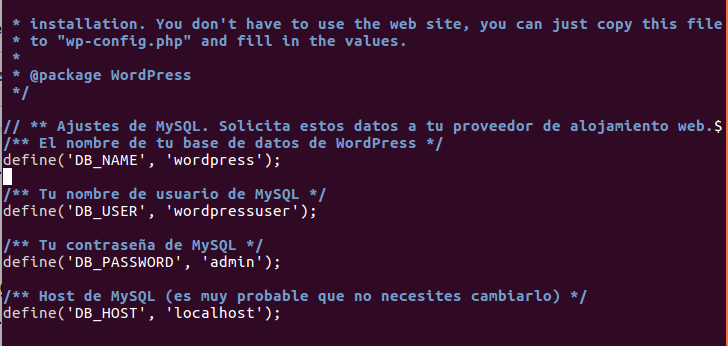
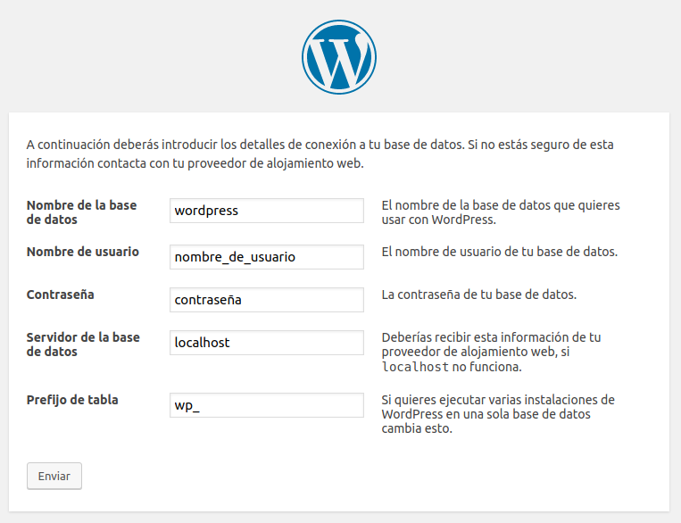
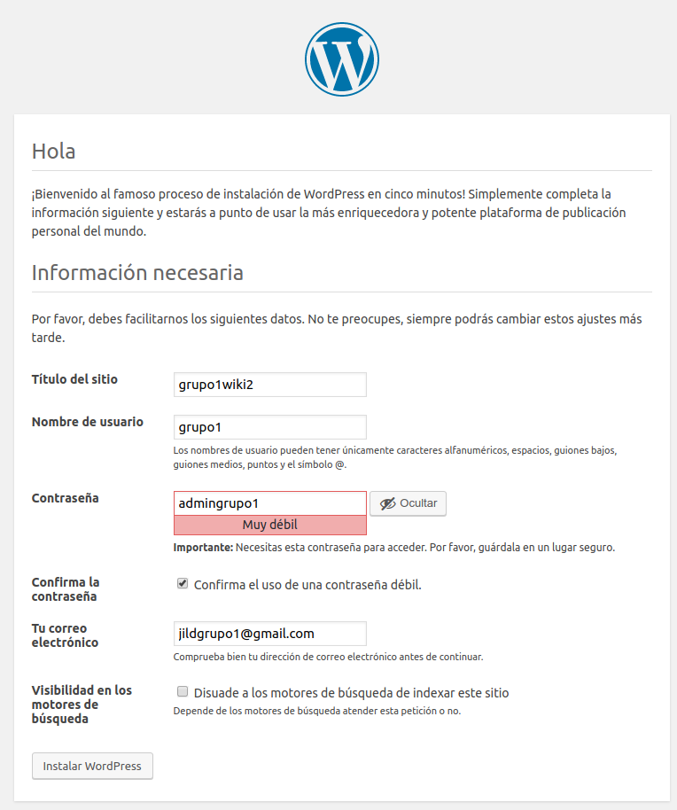
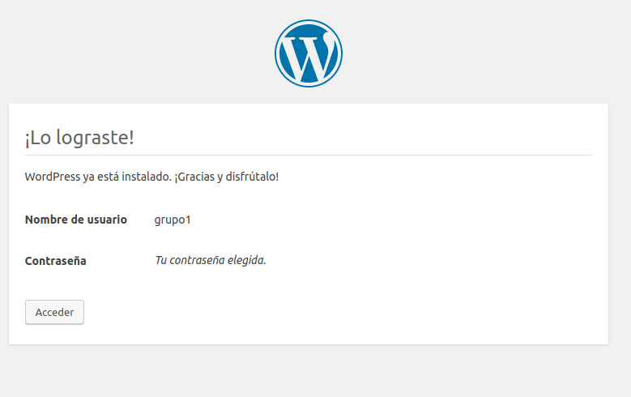
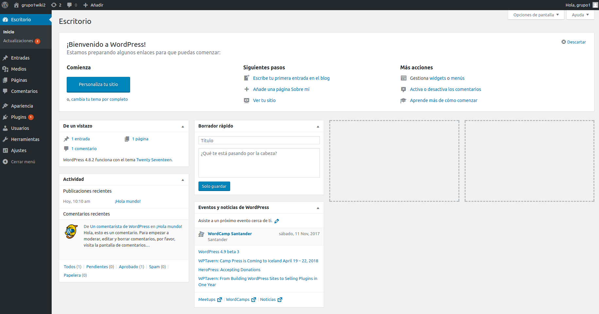

Tutorial de Instalación de Wordpress
WordPress es un sistema de gestión de contenidos (CMS) que permite crear y mantener un blog u otro tipo de web, tiene más de un millar de temas (plantillas) disponibles en su web oficial, no es solo un sistema sencillo e intuitivo para crear un blog, sino que permite realizar toda clase de webs más complejas. Es un sistema ideal para actualizar periódicamente nuestro sitio web.
También dispone de unos componentes muy útiles y esenciales para la creación de la web.
Para la instalación del hosting de wordpress necesitarás:
1.1. Para guardar todos los datos de owncloud, debemos tener una base de datos. Para ello nos descargamos mysql server y client. Gracias a ellos, crearemos y gestionaremos nuestra base de datos. Usaremos el comando:
$ sudo apt-get install mysql-server mysql-client
1.2. Una vez instalados, entraremos dentro de mysql usando este comando:
$ mysql -u root -p
1.3. Finalmente crearemos la base de datos.
CREATE DATABASE worpress;
2.1. Debemos descargar la versión estable mas reciente de wordpress. Estos se consigue escribiendo el comando:
# wget http://wordpress.org/latest.tar.gz
Si lo queremos en español, escribiremos:
# wget https://es.wordpress.org/wordpress-4.8.2-es_ES.tar.gz
2.2. A continuación, extraemos los archivos del zip descargado usando este comando:
#tar xzvf nombredelarchivo.tar.gz
2.3. Esto creará un directorio llamado WordPress en nuestra carpeta. Por lo tanto necesitaremos los paquetes más actualizados, usaremos:
# sudo apt-get update
2.4. Para que WordPress reconozca la base de datos hay que modificar un archivo llamado wp-config-sample.php, después de modificar los datos de la base de datos guardamos el archivo como wp-config.php.

2.5. Y por último, para poder trabajar con imágenes, plugins y que para poder actualizar porciones de tu sitio usando tus credenciales SSH para logarte, añadiremo
# sudo apt-get install php7.1 $ sudo apt install -y libapache2-mod-php7.1 php7.1-gd php7.1-json php7.1-mysql php7.1-curl php7.1-intl php7.1-mcrypt php-imagick php7.1-zip php7.1-xml php7.1-mbstring
# sudo service apache2 restart
3.1. Ya teniendo la aplicación configurada, la copiaremos dentro de la raíz de documentos de nuestro servidor Web, la localización de la raíz de documentos en LAMPP de Ubuntu es /var/www/html o /opt/lampp/htdocs, para transferir los archivos escribiremos:
# sudo cp -r ~/wordpress/* /var/www/html/
o
# sudo cp -r ~/wordpress/* /opt/lampp/htdocs
3.2. Ya copiado de forma segura nos moveremos hacia dentro de la raíz:
# cd /var/www/html
o
# cd /opt/lampp/htdocs
3.3. Primero, vamos a crear manualmente el directorio de uploads tras el directorio de wp-content en nuestra raiz de documentos. Este será el directorio de nuestro contenido:
# mkdir /var/www/html/wp-content/uploads
3.4. Ahora tenemos un directorio donde dejar los ficheros que subamos, pero necesitaremos mayores permisos, para ello:
# sudo chmod-R /var/www/html/wp-content/uploads
4.1. Ahora que tienes los archivos en su sitio y tu software está configurado, puedes completar la instalación a través del interfaz web. En tu navegador web, dirígete a la URL de tu servidor web:
http://nombre_DNS_o_IP
4.2. Veras la página inicial de configuración de WordPress, donde crearás una cuenta inicial de administrador.


4.3. Al finalizar todos los pasos WordPress confirmará la instalación y te pedirá que accedas con la cuenta que acabas de crear. Presiona el botón de debajo y después rellena los campos necesarios para acceder con la información de tu cuenta.

4.4. Tras esto verás la interfaz de WordPress y podrás comenzar a montar tu web o blog.
